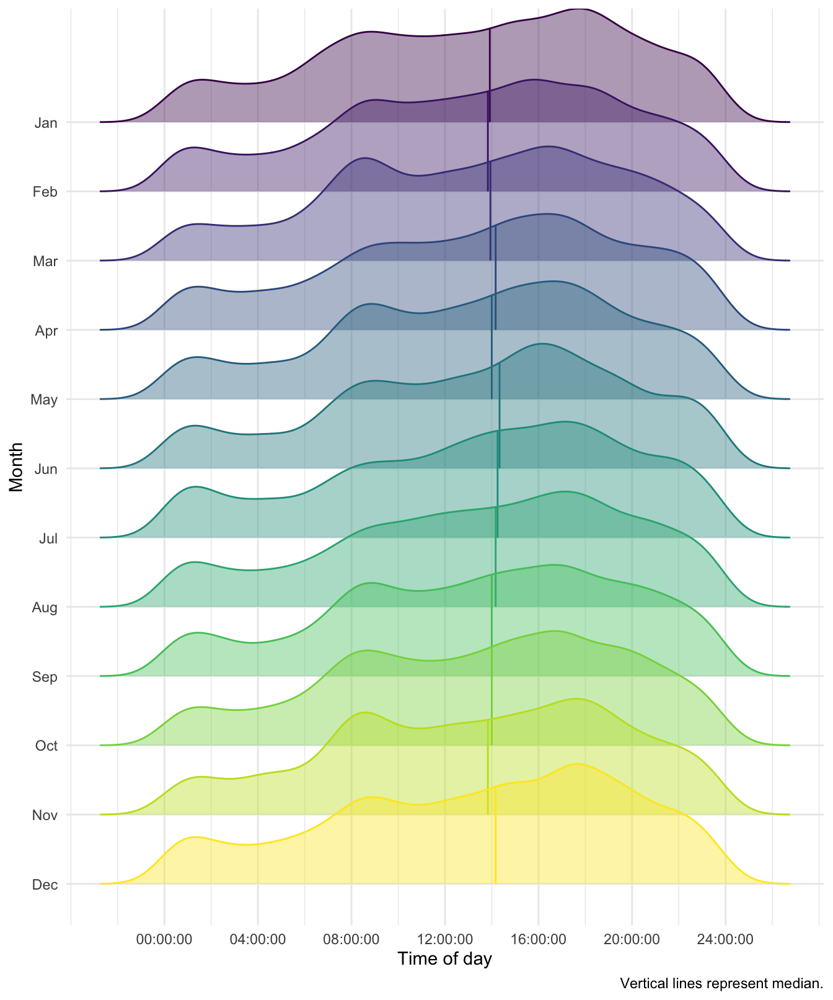
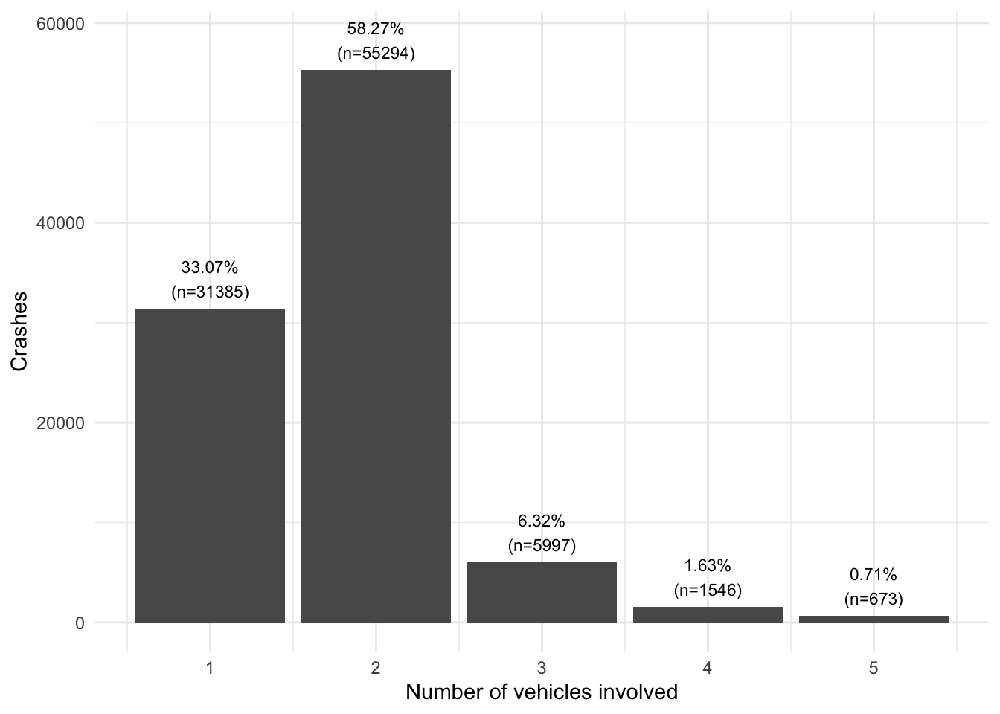

# Load packages
## Handling dates
library(lubridate)
## Mapping
library(sf)
library(nycgeo)
## And starring...
library(tidyverse)
# Set theme for plots
theme_set(theme_minimal())Overview
In this post, I’ll explore a data set of motor vehicle crashes in New York City obtained via data.gov. This data set interested me for two reasons. First, it’s quite comprehensive, covering all crashes resulting in injury and/or over $1000 in damage since mid-2012. Second, it’s messy in a way that’s very representative of real-world data (and very hard to replicate with more “shrink-wrapped” data sets).
My goals for this analysis were to perform some basic data cleaning, get some insights from the data, and practice a type of visualization I don’t get to use very often in my day job: the choropleth map!
To start, we’ll load the packages we need:
Now we’ll read in the data. Because the CSV is so large (~437 Mb), I decided to read it directly via the URL, rather than downloading and reading the file1. Once the data is loaded, we’ll tweak the column names for readability (converting to sentence case and replacing spaces with underscores), read the Crash_date column via lubridate::as_date(), and change the names of the columns containing vehicle type codes to be consistent with other column names. We’ll also filter the data to look only at crashes in 2023, to avoid using too much memory2.
# Load crash data (https://data.cityofnewyork.us/api/views/h9gi-nx95/rows.csv)
crash_url <- "https://data.cityofnewyork.us/api/views/h9gi-nx95/rows.csv"
# Load data (takes a minute!)
crash_dat <- vroom::vroom(file = crash_url, # Read from URL
guess_max = 10^3,
.name_repair = ~str_replace_all(str_to_sentence(.x),
pattern = " ",
replacement = "_")) %>%
mutate(Crash_date= as_date(Crash_date, format = "%m/%d/%Y")) %>%
filter(year(Crash_date) == 2023) %>% # Only 2023 data
rename_with(\(var) str_replace_all(var,
pattern = "Vehicle_type_code",
replacement = "Type_code_vehicle"))Rows: 2084770 Columns: 29
── Column specification ────────────────────────────────────────────────────────
Delimiter: ","
chr (16): Crash_date, Borough, Location, On_street_name, Cross_street_name,...
dbl (12): Zip_code, Latitude, Longitude, Number_of_persons_injured, Number_...
time (1): Crash_time
ℹ Use `spec()` to retrieve the full column specification for this data.
ℹ Specify the column types or set `show_col_types = FALSE` to quiet this message.Exploring the data
Each row of the data set represents a single incident (crash), and records the date/time, location (borough, ZIP code, latitude/longitude, street name), deaths/injuries, the type(s) of vehicle(s) involved, and contributing factors for each vehicle.
glimpse(crash_dat)Rows: 96,581
Columns: 29
$ Crash_date <date> 2023-12-18, 2023-12-18, 2023-11-17, 202…
$ Crash_time <time> 03:40:00, 11:10:00, 23:20:00, 07:26:00,…
$ Borough <chr> NA, NA, NA, NA, "MANHATTAN", "MANHATTAN"…
$ Zip_code <dbl> NA, NA, NA, NA, 10036, 10011, 10472, 104…
$ Latitude <dbl> 40.74660, 40.72258, 40.71664, 40.66688, …
$ Longitude <dbl> -73.76503, -73.94049, -73.97561, -73.945…
$ Location <chr> "(40.7466, -73.76503)", "(40.722576, -73…
$ On_street_name <chr> "LONG ISLAND EXPRESSWAY", "BROOKLYN QUEE…
$ Cross_street_name <chr> NA, NA, NA, NA, "WEST 47 STREET", NA, NA…
$ Off_street_name <chr> NA, NA, NA, NA, NA, "13 WEST 13 S…
$ Number_of_persons_injured <dbl> 0, 0, 0, 2, 2, 2, 0, 0, 0, 0, 0, 0, 2, 1…
$ Number_of_persons_killed <dbl> 0, 0, 0, 0, 0, 0, 0, 0, 0, 0, 0, 0, 0, 0…
$ Number_of_pedestrians_injured <dbl> 0, 0, 0, 0, 0, 0, 0, 0, 0, 0, 0, 0, 0, 0…
$ Number_of_pedestrians_killed <dbl> 0, 0, 0, 0, 0, 0, 0, 0, 0, 0, 0, 0, 0, 0…
$ Number_of_cyclist_injured <dbl> 0, 0, 0, 0, 0, 0, 0, 0, 0, 0, 0, 0, 0, 0…
$ Number_of_cyclist_killed <dbl> 0, 0, 0, 0, 0, 0, 0, 0, 0, 0, 0, 0, 0, 0…
$ Number_of_motorist_injured <dbl> 0, 0, 0, 2, 2, 2, 0, 0, 0, 0, 0, 0, 2, 1…
$ Number_of_motorist_killed <dbl> 0, 0, 0, 0, 0, 0, 0, 0, 0, 0, 0, 0, 0, 0…
$ Contributing_factor_vehicle_1 <chr> "Pavement Slippery", "Following Too Clos…
$ Contributing_factor_vehicle_2 <chr> NA, "Unspecified", "Unspecified", "Traff…
$ Contributing_factor_vehicle_3 <chr> NA, NA, NA, NA, NA, NA, NA, NA, NA, NA, …
$ Contributing_factor_vehicle_4 <chr> NA, NA, NA, NA, NA, NA, NA, NA, NA, NA, …
$ Contributing_factor_vehicle_5 <chr> NA, NA, NA, NA, NA, NA, NA, NA, NA, NA, …
$ Collision_id <dbl> 4688250, 4688384, 4688910, 4688735, 4688…
$ Type_code_vehicle_1 <chr> "Station Wagon/Sport Utility Vehicle", "…
$ Type_code_vehicle_2 <chr> NA, "Carry All", "Sedan", "School bus", …
$ Type_code_vehicle_3 <chr> NA, NA, NA, NA, NA, NA, NA, NA, NA, NA, …
$ Type_code_vehicle_4 <chr> NA, NA, NA, NA, NA, NA, NA, NA, NA, NA, …
$ Type_code_vehicle_5 <chr> NA, NA, NA, NA, NA, NA, NA, NA, NA, NA, …Time and date
First, let’s look at incidents by month:
ggplot(crash_dat, aes(x = month(Crash_date, label = TRUE))) +
geom_bar() +
labs(x = "Month", y = "Incidents")No obvious differences by month/season! Next, let’s consider crash times. Looking at raw crash time data, there seems to be an unusually high number of crashes at exactly midnight (00:00):
count(crash_dat, Crash_time,sort = TRUE) %>% head(n=10)In fact, we see almost twice as many crashes reported at midnight as at 5pm! This makes me suspect that in at least some cases a crash time of 00:00 represents missing data; for the purposes of this graph, we’ll exclude them.
Now to see whether the time that incidents occurred varied by month. To help us compare months, we’ll use a ridgeline plot3, via ggridges::geom_density_ridges():
crash_dat %>%
filter(Crash_time > 0) %>%
mutate(Crash_month = month(Crash_date, label = TRUE)) %>%
ggplot(aes(x=Crash_time,
color=Crash_month,
fill=Crash_month,
y = fct_rev(Crash_month))) +
ggridges::geom_density_ridges(alpha = 0.4,
quantile_lines = TRUE,
quantiles = 2) +
scale_color_viridis_d() +
scale_x_time(breaks = (0:6)*14400) +
labs(x = "Time of day", y = "Month",
caption = "Vertical lines represent median.") +
theme(legend.position = "none")

Crashes by time of day look fairly consistent across months; notice that the median of each distribution is around 2pm. Additionally, we can see peaks in the number of incidents between 8-9am and between 5-6pm (representing rush hour, I’m assuming).
Injuries and fatalities
To explore crash outcomes, we’ll use pivot_longer() to make a data frame with multiple rows per crash, each row representing the number of motorists, cyclists, or pedestrians (Type) who were injured or killed (Outcome) in that crash.
outcomes_by_crash <- crash_dat %>%
select(Collision_id,
starts_with("Crash"), # Keep date and time
starts_with("Number_of_")) %>%
pivot_longer(cols = starts_with("Number_of_"),
names_prefix = "Number_of_", # Clean up col names
names_sep = "\\_", # Split at underscore
names_to = c("Type","Outcome")) %>%
mutate(Crash_month = month(Crash_date, label = TRUE),
Type = str_to_title(Type),
Outcome = str_to_title(Outcome))
# Check our work
head(outcomes_by_crash, n = 10)Now we can plot total injuries/fatalities for motorists, cyclists, and pedestrians by month. Because fatalities are (thankfully) far rarer than injuries, we’ll use the scales = "free_y" argument to facet_wrap() to let the two halves of the plot use different y-axis limits. We’ll also use fct_reorder() to make sure the ordering of categories in the legend matches the ordering of the categories in the graph itself.
outcomes_by_crash %>%
filter(Type != "Persons") %>%
mutate(Type = fct_reorder(Type, value, sum, .desc = T)) %>%
ggplot(aes(x = Crash_month,
y = value,
color = Type,
group = Type)) +
stat_summary(geom="line", fun = "sum") +
stat_summary(geom="point", fun = "sum") +
facet_wrap(~Outcome,
scales = "free_y",
nrow = 2) +
labs(y = "Number of persons", x= "Month")Interestingly, injuries and fatalities for motorists seem to be highest in summer, while injuries and fatalities for pedestrians are lower during these months.
Vehicles
Next, let’s explore the contributing factors and types of vehicles involved.
Cleaning
We’ll restructure the data such that each row represents one vehicle, rather than one incident!
vehicle_dat <- crash_dat %>%
select(Collision_id, starts_with(c("Contributing_factor","Type_code"))) %>%
pivot_longer(-Collision_id,
names_sep = "_vehicle_",
names_to = c(".value","Vehicle")) %>%
drop_na() %>%
mutate(Vehicle = as.factor(as.numeric(Vehicle)))Now we can look at the different vehicle type codes and contributing factors that occur in the data:
count(vehicle_dat, Type_code, sort = TRUE)
count(vehicle_dat, Contributing_factor, sort = TRUE)There are a lot of categories in here, and many of them appear to overlap (e.g., “Motorcycle” and “Motorbike”). To clean up a bit, we’ll change all Type_code entries to sentence case, then manually consolidate some levels:
vehicle_dat <- vehicle_dat %>%
mutate(Type_code = str_to_sentence(Type_code),
Type_code = case_when( # checks a series of conditionals
str_detect(Type_code,
coll("wagon", ignore_case = TRUE)) ~ "SUV/station wagon",
str_detect(Type_code,
coll("sedan",ignore_case = TRUE)) ~ "Sedan",
.default = Type_code),
Type_code = case_match( # Replaces (vectors of) matches, OLD ~ NEW
Type_code,
"Bicycle" ~ "Bike",
"Motorbike" ~ "Motorcycle",
c("Ambul","Ambu","Amb") ~ "Ambulance",
c("Unkno","Unk") ~ "Unknown",
c("Fire","Fdny","Firetruck",
"Firet","Fdny truck","Fdny fire") ~ "Fire truck",
"E-sco" ~ "E-scooter",
"E-bik" ~ "E-bike",
.default = Type_code) %>%
fct_lump_prop(0.005), # Lump codes occurring less than 0.5%
Contributing_factor = fct_lump_prop(
str_to_sentence(Contributing_factor),
0.005)) # same for contributing factorNow let’s check our work:
(crashes_by_type <- count(vehicle_dat, Type_code,
sort = TRUE, name = "Crashes"))
(crashes_by_factor <- count(vehicle_dat, Contributing_factor,
sort = TRUE, name = "Crashes"))It’s not perfect, and a subject matter expert could probably identify more types/factors that could be combined, but it should be workable for our purposes.
Exploring
What types of vehicles were involved in crashes?
ggplot(crashes_by_type, aes(x = fct_rev(fct_inorder(Type_code)), y = Crashes)) +
geom_col() + coord_flip() +
labs(x = "Vehicle type")Without knowing more about how common different types of vehicles are in NYC, we can’t make strong inferences from this data; i.e., the prevalence of sedans, SUVs, and station wagons in the crash data likely reflects the prevalence of these vehicles on the road, period. If we wanted to explore whether certain vehicle types are disproportionately likely to be involved in crashes, we’d need to know not just how many of each vehicle type are present in the city, but also how many hours each vehicle type is in motion on average (since, for example, buses and box trucks probably spend more of their time driving than private passenger vehicles, even if there are more of the latter).
What contributing factors were involved in crashes?
crashes_by_factor %>%
filter(Contributing_factor != "Unspecified") %>% # Ignore missing data
ggplot(aes(x = fct_rev(fct_inorder(Contributing_factor)), y = Crashes)) +
geom_col() + coord_flip() +
labs(x = "Contributing factor")Here, we can draw more inferences from the data alone. Distracted driving seems to be a clear issue, as well as following too closely and failing to yield.
How many vehicles were involved per crash?
We can also examine how many vehicles were involved per crash, and plot the distribution:
count(vehicle_dat, Collision_id, name = "Vehicles") %>% # Count vehicles per collision
count(Vehicles, name = "Crashes") %>% # Count collisions for each number of vehicles
mutate(Proportion = Crashes/sum(Crashes),
Label = paste0(scales::percent(Proportion),"\n(n=",Crashes,")")) %>%
ggplot(aes(x = Vehicles, y = Crashes, label = Label)) +
geom_col() + labs(x = "Number of vehicles involved") +
geom_text(nudge_y = 3000, size = 3)

Perhaps unsurprisingly, the majority of crashes involved two vehicles; crashes involving three or more vehicles were relatively rare (<10% of crashes).
Mapping
Finally, let’s map the data! We’ll begin by filtering out crashes missing location data, or with location (0,0):
crash_map_dat <- filter(crash_dat, Latitude != 0, Longitude != 0)The easiest way to check for outliers is simply to plot the data:
ggplot(crash_map_dat, aes(x=Longitude, y=Latitude)) +
geom_point(size=0.05, alpha = 0.5) # Small/transparent to handle overplottingThe projection is a little wonky, but we can see the map taking shape. There are enough data points in our data set to make individual streets!
Individual crashes
We can improve our map by incorporating actual map data for New York City. Fortunately, most of the heavy lifting has already been done for us by the nycgeo package! Among other things, this package can split the geography up according to different types of administrative boundaries, from boroughs all the way down to invidual census tracts.
# Load NYC map data (https://nycgeo.mattherman.info/index.html)
map_dat <- nyc_boundaries(geography = "tract") # Split into census tracts
# Add simple features (sf) to our data set
crash_map_dat <- crash_map_dat %>%
st_as_sf(coords = c("Longitude","Latitude"),
crs=4326,
stringsAsFactors = FALSE)We can now overlay individual crashes as points on a map of census tracts:
ggplot(data = crash_map_dat) +
geom_sf(data = map_dat, mapping = NULL) +
geom_sf(size = 0.025, alpha = 0.25, color = "red") +
theme_void()old-style crs object detected; please recreate object with a recent sf::st_crs()Plotting crashes as individual points is useful for identifying where crashes occurred, but things get muddled by the sheer number of data points, especially where the data get dense (e.g., basically all of Manhattan).
Choropleth map
The solution is to aggregate the data by dividing the map into subsections and coloring them based on the number of crashes. We’ll define the subsections based on census tracts, thus making a choropleth map!
We’ll also need a way to identify which tract each crash occurred in, since our data only includes the lat/lon of the crash. Fortunately, nyc_point_poly() will do just this!
crash_map_dat_tract <- nyc_point_poly(crash_map_dat, "tract") %>%
st_set_geometry(NULL)old-style crs object detected; please recreate object with a recent sf::st_crs()Trasnsforming points to EPSG 2263old-style crs object detected; please recreate object with a recent sf::st_crs()crashes_by_tract <- crash_map_dat_tract %>%
count(tract_id, name = "Crashes", sort = TRUE)
head(crashes_by_tract, n=10)Now we’ll join this with our map data and plot:
left_join(map_dat,crashes_by_tract) %>%
ggplot() +
geom_sf(aes(fill = Crashes)) +
scale_fill_viridis_c(option = "A") +
coord_sf() +
theme_void() +
theme(legend.position = c(0.2,0.815)) # Position legend in blank area of plotJoining with `by = join_by(tract_id)`
old-style crs object detected; please recreate object with a recent
sf::st_crs()We can use a similar approach to plot other variables by tract. Let’s look at the total number of injuries reported per tract:
injuries_by_tract <- crash_map_dat_tract %>%
group_by(tract_id) %>%
summarise(Injuries =sum(Number_of_persons_injured)) %>%
ungroup()
head(injuries_by_tract, n=10)left_join(map_dat,injuries_by_tract) %>%
ggplot() +
geom_sf(aes(fill = Injuries)) +
scale_fill_viridis_c(option = "A") +
coord_sf() +
theme_void() +
theme(legend.position = c(0.2,0.815)) # Position legend in blank area of plotJoining with `by = join_by(tract_id)`
old-style crs object detected; please recreate object with a recent
sf::st_crs()Heatmap
For comparison, we can also make a heatmap. Same basic idea as the choropleth map (i.e., colors represent number of crashes per area), but the areas are formed by dividing the geography up into regular polygons, rather than using real-world divisions like census tracts.
ggplot() +
geom_sf(data = map_dat, mapping = NULL) +
geom_hex(data = filter(crash_dat, Latitude != 0, Longitude != 0),
aes(x=Longitude,y=Latitude),
binwidth=0.005) +
coord_sf(crs = 4326) +
scale_fill_viridis_c(option = "A") +
theme_void()+
theme(legend.position = c(0.2,0.815))old-style crs object detected; please recreate object with a recent sf::st_crs()Personally, I like the choropleth map better; it’s easier to see how the distribution of crashes maps onto the actual geography of the city.
Crashes by street and tract
In both of our choropleth maps, we can see a couple of tracts with high rates of crashes relative to the surrounding areas (e.g., the long tract between Brooklyn and Queens that seems to correspond to Flushing Meadows Corona Park). I’m guessing that some of these high rates of crashes may be due to freeways and expressways running through the tracts in question. Conveniently, the data set includes the names of the street on which each crash occurred! Let’s look at the street with the most crashes in the top 20 tracts by crashes:
crash_map_dat_tract %>%
count(tract_id, On_street_name, name = "Crashes", sort = TRUE) %>%
drop_na(On_street_name) %>%
filter(tract_id %in% head(crashes_by_tract$tract_id,20)) %>% # Top 20 tracts
slice_max(order_by = Crashes, n=1, by = tract_id) # Street w/ most crashesAs expected, in the tracts with the most crashes, the street with the most crashes tends to be a parkway or expressway.
While we’re at it, let’s look at the top 50 streets for crashes citywide. We’ll use the full data set (crash_dat) to include cases where the street was recorded but the latitude/longitude were not.
crash_dat %>%
drop_na(On_street_name) %>%
mutate(On_street_name = str_to_title(On_street_name)) %>%
count(On_street_name, sort = TRUE, name = "Crashes") %>%
head(n=50)Future Directions
What we’ve done so far barely scratches the surface of the data set; I went for breadth over depth in this post. Here’s a handful of ways I’d like to explore the data further (these may be featured in future blog posts):
- Incorporate data from previous years and examine whether number of crashes/injuries/fatalities changes with start/end of daylight savings time.
- Explore whether specific vehicle types or contributing factors predict greater likelihood of injuries/fatalities.
- Combine with other data sets
- Road hours by vehicle type: are certain vehicle types disproportionately likely to be involved in crashes?
- Census tract data: do tract characteristics (e.g., income, employment) predict frequency of crashes?
- Interactivity! Use
leafletandshinyto build an interactive map of crash data, allowing users to zoom/scroll the map and filter by date range, vehicle type, contributing factor, and more.
Footnotes
In general,
vroom::vroom()is much faster thanread.csv(), but here we’re also limited by connection speed; it took a little over a minute to read the data in with this approach.↩︎There are a number of approaches for dealing with very large (and larger-than-memory) data sets, which I hope to cover in future posts.↩︎
Obligatory reference to that one Joy Division album cover.↩︎